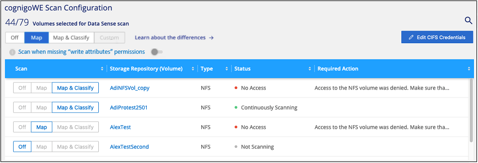

Notas de la versión
Notas de la versión
Primeros pasos con la clasificación de BlueXP para Cloud Volumes ONTAP y ONTAP on-premises
 Sugerir cambios
Sugerir cambios
Completa unos pasos para empezar a analizar tus volúmenes de ONTAP en Cloud Volumes ONTAP y on-premises mediante la clasificación de BlueXP.
Inicio rápido
Empiece rápidamente siguiendo estos pasos o desplácese hacia abajo hasta las secciones restantes para obtener todos los detalles.
 Descubra los orígenes de datos que desea analizar
Descubra los orígenes de datos que desea analizarPara poder analizar volúmenes, debe agregar los sistemas como entornos de trabajo en BlueXP:
-
Para sistemas Cloud Volumes ONTAP, estos entornos de trabajo deberían estar ya disponibles en BlueXP
-
Para sistemas ONTAP en las instalaciones, "BlueXP debe detectar los clústeres de ONTAP"
 Implementa la instancia de clasificación de BlueXP
Implementa la instancia de clasificación de BlueXP"Implementa la clasificación de BlueXP" si aún no hay una instancia implementada.
 Habilita la clasificación de BlueXP y selecciona los volúmenes que deseas escanear
Habilita la clasificación de BlueXP y selecciona los volúmenes que deseas escanearSeleccione la pestaña Configuración y active los escaneos de cumplimiento para volúmenes en entornos de trabajo específicos.
 Garantice el acceso a los volúmenes
Garantice el acceso a los volúmenesAhora que la clasificación de BlueXP está habilitada, asegúrate de que puede acceder a todos los volúmenes.
-
La instancia de clasificación de BlueXP necesita una conexión de red con cada subred de Cloud Volumes ONTAP o sistema ONTAP en las instalaciones.
-
Los grupos de seguridad de Cloud Volumes ONTAP deben permitir las conexiones entrantes desde la instancia de clasificación de BlueXP.
-
Asegúrate de que estos puertos estén abiertos a la instancia de clasificación de BlueXP:
-
Para NFS: Puertos 111 y 2049.
-
Para CIFS: Puertos 139 y 445.
-
-
Las políticas de exportación de volúmenes de NFS deben permitir el acceso desde la instancia de clasificación de BlueXP.
-
La clasificación de BlueXP necesita credenciales de Active Directory para analizar los volúmenes de CIFS.
Haga clic en cumplimiento > Configuración > Editar credenciales CIFS y proporcione las credenciales.
 Gestione los volúmenes que desea analizar
Gestione los volúmenes que desea analizarSelecciona o anula la selección de los volúmenes que quieres analizar y la clasificación de BlueXP iniciará o detendrá su análisis.
Detección de los orígenes de datos que desea analizar
Si los orígenes de datos que desea analizar no están ya en su entorno de BlueXP, puede añadirlos al lienzo en este momento.
Sus sistemas Cloud Volumes ONTAP ya deben estar disponibles en el lienzo de BlueXP. Para los sistemas ONTAP en las instalaciones, es necesario que lo tenga "BlueXP descubre estos clústeres".
Implementar la instancia de clasificación de BlueXP
Pon en marcha la clasificación de BlueXP si aún no hay una instancia implementada.
Si está escaneando sistemas Cloud Volumes ONTAP y ONTAP locales a los que se puede acceder a través de Internet, puede hacerlo "Pon en marcha la clasificación de BlueXP en el cloud" o. "en una ubicación en el hotel que tiene acceso a internet".
Si está escaneando en las instalaciones sistemas ONTAP que se han instalado en un sitio oscuro que no tiene acceso a Internet, debe hacerlo "Pon en marcha la clasificación de BlueXP en la misma ubicación on-premises que no tiene acceso a Internet". Esto también requiere que el conector BlueXP se despliegue en esa misma ubicación en las instalaciones.
Las actualizaciones del software de clasificación de BlueXP se automatizan siempre que la instancia tenga conectividad a Internet.
Habilitar la clasificación de BlueXP en tus entornos de trabajo
Puedes habilitar la clasificación de BlueXP en sistemas Cloud Volumes ONTAP en cualquier proveedor de nube compatible y en clústeres de ONTAP on-premises.
-
En el menú de navegación izquierdo de BlueXP, haga clic en Gobierno > Clasificación y seleccione la ficha Configuración.

-
Seleccione cómo desea analizar los volúmenes en cada entorno de trabajo. "Obtenga más información sobre las exploraciones de clasificación y mapeo":
-
Para asignar todos los volúmenes, haga clic en asignar todos los volúmenes.
-
Para asignar y clasificar todos los volúmenes, haga clic en asignar y clasificar todos los volúmenes.
-
Para personalizar la exploración de cada volumen, haga clic en o seleccione el tipo de exploración para cada volumen y, a continuación, elija los volúmenes que desea asignar y/o clasificar.
Consulte Habilitar y deshabilitar los análisis de cumplimiento de normativas en los volúmenes para obtener más detalles.
-
-
En el cuadro de diálogo de confirmación, haz clic en Aprobar para que la clasificación de BlueXP comience a escanear tus volúmenes.
La clasificación de BlueXP comienza a analizar los volúmenes que seleccionaste en el entorno de trabajo. Los resultados estarán disponibles en la consola de cumplimiento en cuanto la clasificación de BlueXP finalice los análisis iniciales. El tiempo que se tarda en depende de la cantidad de datos; puede que sea unos minutos u horas.

|
|
Verificar que la clasificación de BlueXP tenga acceso a los volúmenes
Asegúrese de que la clasificación de BlueXP pueda acceder a los volúmenes comprobando la red, los grupos de seguridad y las políticas de exportación. Tendrás que ofrecer la clasificación de BlueXP con credenciales CIFS para que pueda acceder a los volúmenes de CIFS.
-
Asegúrese de que haya una conexión de red entre la instancia de clasificación de BlueXP y cada red que incluya volúmenes para los clústeres de Cloud Volumes ONTAP o de ONTAP en las instalaciones.
-
Compruebe que el grupo de seguridad de Cloud Volumes ONTAP permita el tráfico entrante de la instancia de clasificación de BlueXP.
Puede abrir el grupo de seguridad para el tráfico desde la dirección IP de la instancia de clasificación de BlueXP o bien abrir el grupo de seguridad para todo el tráfico desde dentro de la red virtual.
-
Compruebe que los siguientes puertos estén abiertos en la instancia de clasificación de BlueXP:
-
Para NFS: Puertos 111 y 2049.
-
Para CIFS: Puertos 139 y 445.
-
-
Compruebe que las políticas de exportación de volúmenes de NFS incluyan la dirección IP de la instancia de clasificación de BlueXP para que pueda acceder a los datos de cada volumen.
-
Si usas CIFS, proporciona una clasificación de BlueXP con credenciales de Active Directory para que pueda analizar los volúmenes de CIFS.
-
En el menú de navegación izquierdo de BlueXP, haga clic en Gobierno > Clasificación y seleccione la ficha Configuración.

-
Para cada entorno de trabajo, haga clic en Edit CIFS Credentials e introduzca el nombre de usuario y la contraseña que la clasificación de BlueXP necesita para acceder a los volúmenes CIFS del sistema.
Las credenciales pueden ser de solo lectura, pero al proporcionar credenciales de administrador se garantiza que la clasificación de BlueXP pueda leer cualquier dato que requiera permisos elevados. Las credenciales se almacenan en la instancia de clasificación de BlueXP.
Si quieres asegurarte de que las «horas de último acceso» no cambian debido a los análisis de clasificación de BlueXP, recomendamos que el usuario tenga permisos de atributos de escritura en CIFS o permisos de escritura en NFS. Si es posible, recomendamos que el usuario configurado de Active Directory sea parte de un grupo padre en la organización que tenga permisos para todos los archivos.
Después de introducir las credenciales, debe ver un mensaje que indica que todos los volúmenes CIFS se autenticaron correctamente.

-
-
En la página Configuration, haga clic en View Details para revisar el estado de cada volumen CIFS y NFS y corregir los errores.
Por ejemplo, la siguiente imagen muestra cuatro volúmenes, uno de los cuales la clasificación de BlueXP no puede analizar debido a problemas de conectividad de red entre la instancia de clasificación de BlueXP y el volumen.

Habilitar y deshabilitar los análisis de cumplimiento de normativas en los volúmenes
Puede iniciar o detener exploraciones de sólo asignación, o bien análisis de asignación y clasificación, en un entorno de trabajo en cualquier momento desde la página Configuración. También puede cambiar de exploraciones de sólo asignación a exploraciones de asignación y clasificación, y viceversa. Le recomendamos que analice todos los volúmenes.
El conmutador situado en la parte superior de la página para Buscar cuando faltan los permisos de "atributos de escritura" está desactivado de forma predeterminada. Esto significa que, si la clasificación de BlueXP no tiene permisos de atributos de escritura en CIFS o permisos de escritura en NFS, el sistema no analizará los archivos, ya que la clasificación de BlueXP no puede revertir la «última hora de acceso» a la marca de tiempo original. Si no le importa si se restablece la última hora de acceso, ENCIENDA el conmutador y se explorarán todos los archivos independientemente de los permisos. "Leer más".

| Para: | Haga lo siguiente: |
|---|---|
Active los análisis de sólo asignación en un volumen |
En el área de volumen, haga clic en Mapa |
Active el análisis completo en un volumen |
En el área de volumen, haga clic en Mapa y clasificación |
Desactive el análisis en un volumen |
En el área de volumen, haga clic en Desactivado |
Active análisis de sólo asignación en todos los volúmenes |
En el área de encabezado, haga clic en Mapa |
Active el análisis completo en todos los volúmenes |
En el área de encabezado, haga clic en Mapa y clasificación |
Desactive el análisis en todos los volúmenes |
En el área encabezado, haga clic en Desactivado |
|
|
Los nuevos volúmenes agregados al entorno de trabajo sólo se analizan automáticamente cuando se ha establecido el ajuste Mapa o Mapa y clasificación en el área de rumbo. Cuando se establece en personalizado o Desactivado en el área rumbo, deberá activar la asignación y/o la exploración completa en cada volumen nuevo que agregue en el entorno de trabajo. |
Análisis de volúmenes de protección de datos
De forma predeterminada, los volúmenes de protección de datos (DP) no se analizan porque no se exponen externamente y la clasificación de BlueXP no puede acceder a ellos. Se trata de los volúmenes de destino de las operaciones de SnapMirror desde un sistema ONTAP en las instalaciones o desde un sistema Cloud Volumes ONTAP.
Inicialmente, la lista de volúmenes identifica estos volúmenes como Type DP con el Status no Scanning y el Required Action Enable Access to DP Volumes.

Si desea analizar estos volúmenes de protección de datos:
-
Haga clic en Activar acceso a volúmenes DP en la parte superior de la página.
-
Revise el mensaje de confirmación y vuelva a hacer clic en Activar acceso a volúmenes DP.
-
Se habilitan los volúmenes que se crearon inicialmente como volúmenes NFS en el sistema ONTAP de origen.
-
Los volúmenes que se crearon inicialmente como volúmenes CIFS en el sistema ONTAP de origen requieren la introducción de credenciales CIFS para analizar dichos volúmenes DP. Si ya has introducido credenciales de Active Directory para que la clasificación de BlueXP pueda analizar los volúmenes de CIFS, pueda usar esas credenciales o puede especificar un conjunto diferente de credenciales de administrador.

-
-
Active cada volumen DP que desee analizar del mismo modo que se habilitaron otros volúmenes.
Una vez habilitada, la clasificación de BlueXP crea un recurso compartido NFS de cada volumen de DP que se activó para el análisis. Las políticas de exportación de recursos compartidos solo permiten el acceso desde la instancia de clasificación de BlueXP.
Nota: Si no ha tenido volúmenes de protección de datos CIFS cuando ha activado inicialmente el acceso a volúmenes DP y, más tarde, agregue algunos, el botón Activar acceso a CIFS DP aparece en la parte superior de la página Configuración. Haga clic en este botón y añada credenciales CIFS para habilitar el acceso a estos volúmenes CIFS DP.
|
|
Las credenciales de Active Directory solo están registradas en la máquina virtual de almacenamiento del primer volumen CIFS DP, por lo que se analizarán todos los volúmenes de DP en esa SVM. Cualquier volumen que resida en otras SVM no tendrá registradas las credenciales de Active Directory; por lo tanto, esos volúmenes de DP no se analizarán. |